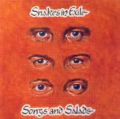

Acoustic, Harmonic & rather Celtic

This first album was presented to the public in June 1996. It's actually a demo which is not distributed. The album contains original material and a selection of Irish and Scottish traditionals.
TrackList
Intro Sigaar Zeg*
Every album needs an opening track. This one takes 17 seconds and it was a major disappointment of a fan who chose this 'song' on the jukebox of Mac's bar in Luton UK.
Fire Down Below - Dickless Jig*
The core business of Snakes in Exile is vocal harmonies. Fire... is a trad with a typical Snakes arrangement. The Dickless Jig is the first Snakes in Exile original. It arose during the after party of a Sligo (Ireland) wedding.
Ould Johnny Rag*
A womanising ragman with a high interest in his victims' underwear. Gert glitters on the bicycle bell, even during live performances...
The Crack was Ninety in the Isle of Man
"The crack was ninety" is a fixed Irish expression making clear you 'did have' the time of your life. It's the story of a weekend out on the Isle of Man, with the obligatory fights between Irish and English youngsters.
The Green and Red of Mayo
A tribute to the County Mayo, north west of Ireland, 'where the ocean kisses Ireland and the waves caress its shores...'. This song was written by the Saw Doctors, a hot Irish folkrock band. Lots of good memories are linked to these guys, from backstage jamsessions to a Snakes guest performance during the 1999 Saw Doctors' mainstage appearance.
The Barnyards O'Delgaty
The story of a Scottish farmer, frequenting other beds, but still welcome in his own homestead. Truly inspiring. Featuring Luc and Peter on bodhran.
I'll tell me ma
Classic Irish children's song, sang while hopping about in the playground.
The Star of the County Down
Not all love songs have to be corny. A tribute to the most beautiful girl in all of Ireland. Drowsy Maggy, a classic Scottish tune is used as intro and in the solo.
Burps*
A tune, so no words. Features Gert on the mandolin.
Caledonia
Dougy McLean wrote this ode to Scotland, already a classic.
Black and Blue*
A harsh end of promises and illusions.
Mormond Braes
The tale of a lost love...convinced that the next 'one and only' is waiting just around the corner.
The Rare Old Mountain Dew
One of many lyrical descriptions of Poiteen, a kind of potato-moonshine. It's been the inspiration for several songs about tax evasion or just getting high on the stuff...
Loch Lomond
In our parts known mainly from lively student sing along nights. It tells the story of a Scottish soldier sentenced to death during a rising against the English. He sings the song as a farewell to his fellow soldiers and loved ones.
Seven Drunken Nights
A regular drinker catches his wife every night in the act. Over and over he gets the most ridiculous excuses. This track was recorded during a rather spiritual band practice with an ordinary cassettedeck, but this version was chosen for the CD because of the similarity with the live stage act. This was the highlight of the gigs for years.